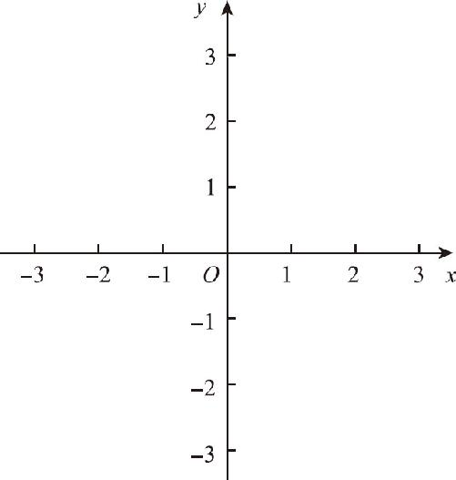
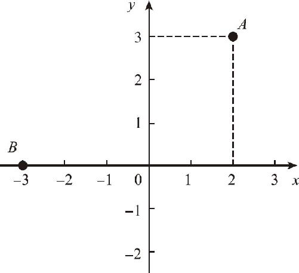
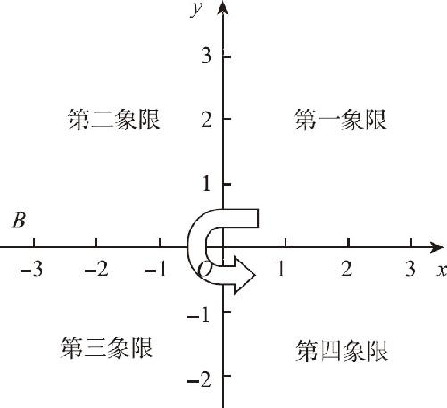

解析几何到底是怎样把众多的数据融合到一起的呢？在正式研究这个问题之前，先来分析一个更简单的问题：当你正位于一个陌生的位置时，你如何正确地把自己的位置告诉你的朋友？如果不使用手机中的地理信息系统，你首先应该寻找一个你们两人都熟悉的，并且离你不太远的位置作为起点，然后再告诉他你所在的位置距离这个地方有多远．通常你的描述方式应该类似于：从那里出发，先向东走几百米，再向南走几百米就到了．现在，让我们分析一下这种描述位置的方式：
首先，从一个起始位置出发；其次，还必须通过两个方向、两个数据来描述；最后，除了给对方提供数字之外，还必须附带长度单位，你必须要告诉人家是走500米还是500千米．在解析几何中，像这种表示位置的方法就叫作坐标法．为什么我们必须要用两个数字来描述位置呢？因为一个数字只能表示一个绝对距离，到这个起始点距离相同的点有无数个，这些点分布在一个圆上，必须要通过两个数字才能表示清楚．如同别人问你在教室中的位置时，你总是要告诉他自己在第几行第几列．一个位置就是平面上的一个点，而现在通过坐标法，似乎能够把一个点和一组数字对应上了，这就是解析几何要做的第一步．
在解析几何里，上述这种位置的标注方法被称为平面直角坐标系，它由这样两部分组成：一个静止不动的起始点；两条在此垂直相交的带有方向和刻度的直线．这个起始点叫作坐标原点，带有方向和刻度的直线叫作坐标轴或者数轴．据说笛卡尔是在做梦时发现了坐标系的，他梦到了两支箭杆交叉在了一起，于是想到了坐标轴的样子．这当然只是一个传说了，但坐标轴的确就像两支箭杆十字交叉的结果（如图11－1所示）．

图11－1
一般把坐标原点用O 表示，把水平的坐标轴叫作x 轴，垂直的坐标轴叫作y 轴．在x 轴的末端带有一个向右的箭头，这表示x 轴上点的坐标从左到右逐渐增大；y 轴的方向垂直向上，这表示y 轴上点的坐标从下到上逐步增大；两个坐标轴垂直相交于坐标原点．整个坐标轴就像两把交叉的刻度尺，两条数轴上的刻度都是均匀的，把从0到1的这段长度叫作单位长，不管是在数轴的什么位置上，单位长度始终保持不变．尽管在纸面上画出的坐标轴长度是有限的，实际上坐标轴不是一条线段，而是一条无限长的直线．
当我们把一个带有原点、单位长的直角坐标系放在一个平面上的时候，这个平面上的所有的位置，就都具有了自己的坐标．如果随意在白纸上描绘一个点，那么这个点的位置就可以通过水平和垂直的一组数字来表示，经过这个点分别作x 轴和y 轴的两条垂线，垂线的垂足所在的位置，就是它的位置坐标．如图11－2所示：点A 在x 轴的坐标是2，y 轴的坐标是3，那么点A 的坐标位置是（2，3），我们用（ ）表示点的坐标，用逗号分隔开的两个数字表示坐标位置，逗号前面的数字表示的是x 轴的数值，后边的数字表示的是y 轴的数值．即使这个点落在坐标轴上，我们也必须带着两个数字，例如：B 点位于x 轴上的－3这一点上，因此它的坐标就是（－3，0），其中的0表示它在y 轴的坐标位置是0．有趣的是：一个坐标点在x 轴上的坐标值的绝对值，表示的却是它到y 轴的距离；而它在y 轴上的坐标值的绝对值，表示的却是到x 轴的距离．这一点需要时刻注意，不要把坐标和距离的概念搞混．

图11－2
坐标轴上不但有正数，而且有负数．同时，由于坐标轴是无限长的，所以当一个平面内出现平面直角坐标系以后，整个平面就被一个大十字分割成了四个部分，这四个部分又叫作四个象限，坐标轴右上角的部分叫作第一象限，从此开始按照逆时针的方向旋转，左上角的部分叫作第二象限，左下角的部分叫作第三象限，右下角的部分叫作第四象限．（如图11－3所示）之所以明确地分成这四个象限，就是因为这四个象限内的点，它们的坐标的正负是有区别的．

图11－3
第一象限位于坐标原点的右上方，在这一范围内的点，水平坐标位于x 轴的右半部分，垂直坐标位于y 轴的上半部分，因此这两个坐标数字都是正数，也就是说，第一象限的两个坐标数字都是大于0的．与之对应的第二部分位于原点的左上方，由于x 轴左侧的数字都是负数，所以在第二象限内的点，x 坐标都是负数，而y 坐标仍然是正的；同理，第三象限中的两个坐标数字都是负的；而第四象限的坐标则和第二象限完全相反．这些内容看似无聊，但是我们却必须从这些最基本的内容开始熟悉．
当我们把一个点变成了两个数字以后，解析几何就迈出了关键性的一步．通过两个数字描述一个点，你认为这样做方便吗？一点都不方便！如果在实际生活中，有人打电话询问你的位置，你肯定会告诉对方自己的具体方位，比如自己正处于某个银行或者某个饭店，即使这个地方彼此都不太熟悉，你可以拍一张照片发给对方，没有人会把自己所在位置的经纬度告诉对方．只是为了描述平面上的一个点，就需要一个坐标轴外加两个数字才能实现；如果要把一条线画出来，不是要通过无数对数字才能表示吗？